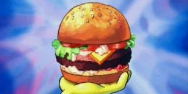

How To Make The Krabby Patty

Burger of the Gods
The Greatest burger in all of the seven seas.
Ingredients
- Krabby Patty Buns
- Lettuce
- Tomato
- Pickles
- Onions
- Cheese
- Krabby Patty
- Secret Formula
Steps
- Put Krabby Patty on the grill
- Cook for 5 minutes and flip
- Toast buns on the grill to desired toastiness
- Set Down Bottom bun and place Krabby Patty
- Starting with the Cheese, place your toppings. Lettuce, Tomato, Onions, and Pickles
- Enjoy The best burger under the seven seas